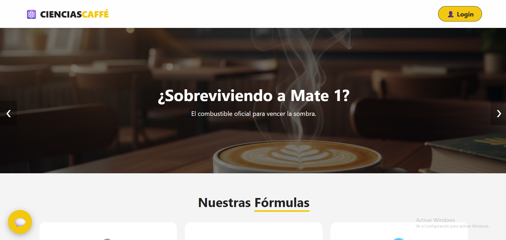

Cafetín Central
Aplicación web para gestión de menú digital, caja registradora y panel administrativo

Stack & Tecnologías Utilizadas
Descripción del Proyecto
Cafetín Central es una aplicación web completa diseñada para optimizar la administración operativa y la atención comercial en el cafetinde la facultad de ciencias de la ucv. La interfaz permite interactuar dinámicamente con un menú digital, llevar el control del punto de venta y supervisar la información administrativa de manera intuitiva. Realizado como proyecto en la materia de Introducción a la informatica.
Módulos Claves & Características:
- Asistente Virtual (Chatbot): Módulo integrado para orientar al estudiante resolviendo dudas sobre el cafetin (horarios, precios y mas).
- Menú Digital Interactivo: Visualización fluida de los productos disponibles y sus categorías.
- Módulo de Caja Registradora: Herramienta para el cálculo y la simulación ágil de órdenes e importes.
- Panel Administrativo: Vista estructurada para la gestión y actualización del catálogo.
- Lógica en Cliente (Vanilla JS): Manejo del estado de la aplicación, interactividad de los componentes e interfaz responsiva directamente en el navegador.